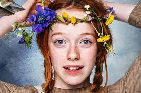

Anne with an E
Iniciaremos con una breve presentacion de la serie
Esta es una serie de televisión canadiense basada en el clásico libro infantil de 1908 de Lucy Maud Montgomery Anne of Green Gables, pero con muchos cambios en la trama. Creada para CBC por Moira Walley-Beckett, está protagonizada por Abeth McNulty como la huérfana Anne Shirley, Geraldine James como Meryl Cuthbert, R. H. Thomson y Matthew Cuthbert, Dalila Bell y Diana Berry y Lucas Jade Zuman y Gilbert Blythe.

Personajes
- Marilla Cuthbert
Interpretada por Geraldine James
- Anne Shirley-Cuthbert
Interpretada por Amybeth McNulty
- Matthew Cuthbert
Interpretado por R. H. Thomson
- Diana Barry
Interpretada por Dalila Bela
- Gilbert Blythe
Interpretado por Lucas Jade Zumann
- Rachel Lynde
Interpretada por Corrine Koslo
- Jerry Baynard
Interpretado por Aymeric Jett Montaz
- Cole Mackenzie
Interpretado por Cory Grüter-Andrew
- Sebastian “Bash” Lacroix
Interpretado por Dalmar Abuzeid
- Muriel Stacy
Interpretada por Joanna Douglas
Sinopsis
En 1896, los hermanos Matthew y Marilla Cuthbert decidieron adoptar a un huérfano y ayudarlos a trabajar en la granja Green Gables de sus antepasados en las afueras de Avonlea en la Isla del Príncipe Eduardo, Canadá. Cuando se supone que Matthew debe recoger a un niño en la estación de tren, conoce a Anne Shirley, de 13 años, una niña imaginativa, inteligente, malhumorada y muy habladora. Anne quedó huérfana a la edad de unos meses y trabajó como empleada doméstica en varias familias antes de ser colocada en un orfanato.
Cuando Matthew decide si quiere que se quede, Marilla no parece estar de acuerdo y desconfía de Anne porque es una huérfana desconocida y no la ve de mucha utilidad. La desconfianza de Meryl parece confirmarse cuando no puede encontrar el broche, lo que la lleva a creer que Anne es una ladrona. Los Cuthbert la "trajeron" de regreso al orfanato, pero cuando llegaron, Anne se negó a entrar porque sus recuerdos del abuso aún estaban frescos, por lo que regresó a la estación de tren. Mientras tanto, Marilla descubre que Anne perdió el broche, no lo robó, lo que la lleva a creer que Anne es la ladrona. Matthew encuentra a Anne y la convence de que regrese a Green Gables, donde se convierte oficialmente en parte de su familia. Sin embargo, Anne siguió enfrentándose al acoso de los estudiantes de la Escuela Avonlea, así como a la discriminación en el salón de clases por parte de los padres de Diana y otros miembros de la sociedad. Annie regresa nuevamente e intenta ser aceptada por el resto de Avonlea usando sus mecanismos de supervivencia: inteligencia, resolución de problemas e imaginación.
 300168
300168
Top mejores episodios de anne with an E
- "Mis mejores sentimientos"(T3,C10)
- "Uncambio brusco y profundo"(T3,C8)
- "Un gran esfuerzo del espiritu bondadoso"(T3,C7)
- "No conozco el miedo y por tanto tengo mucho poder"(T3,C5)
- "Nada detiene al corazon que persevera"(T3,C3)
- "Una cuerda que vibrara al mismo ritmo"(T1,C5)
- "Esos actos decisivos de su vida"(T2,C5)
- "Ya no luchaba contra la percepcion de los hechos"(T2,C8)
- "El creciente bien del mundo"(T2,C10)
- "Un escondido e innato tesoro"(T1,C4)

Despues de esta pequeña introducción a la serie espero que haya sido de su agrado y se anime a verla.podria encontrarla en https://www.netflix.com/title/80136311